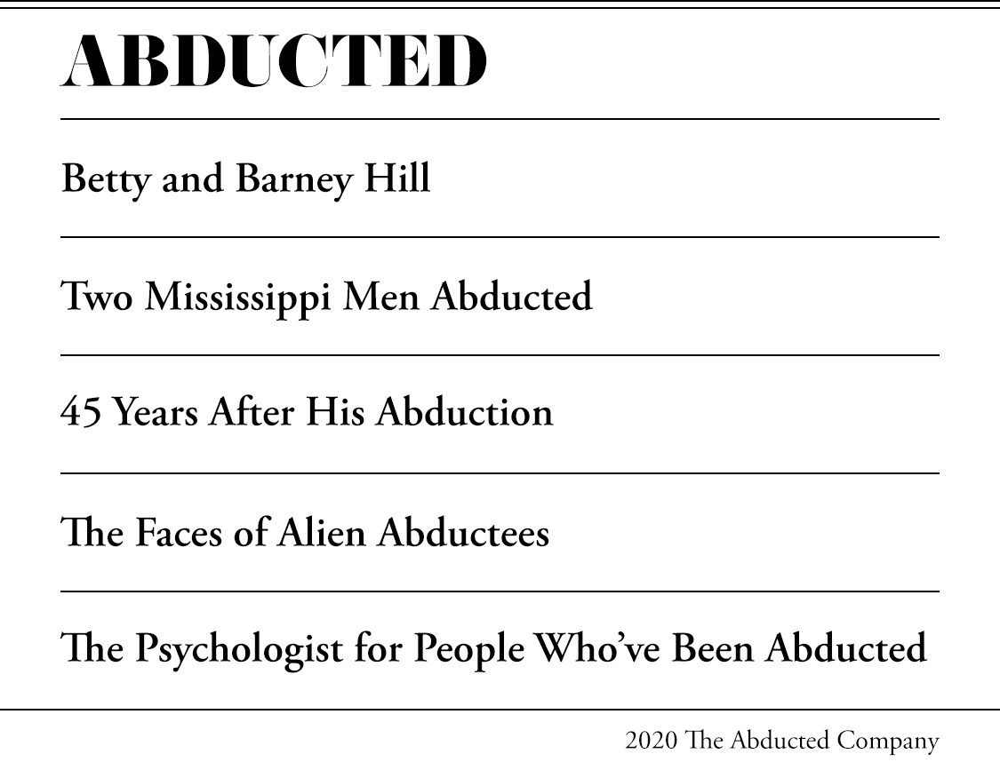

The Hills’ road trip was spontaneous, a well-earned break Barney decided the couple needed, as explained in The Interrupted Journey, a 1966 book they collaborated on with author John G. Fuller. Barney worked a grueling night shift at the post office, driving 60 miles each way. Betty’s job handling state child-welfare cases was no easier. The little free time this biracial couple had was devoted to their church and activities related to the civil-rights movement. After 16 months of marriage, Betty and Barney saw this trip through Montreal and Niagara Falls as their delayed honeymoon. They left so impulsively they had no time to go to the bank before it closed for the weekend. They got in their car with less than $70 in their pockets.
On the last night of their three-day trip, the tired couple sipped coffee in a Vermont diner to recharge before driving back. Barney figured if they pushed through, they could beat the wind and rains from an approaching hurricane. They left the diner around 10 p.m., estimating they could reach their red-framed house in Portsmouth, New Hampshire between 2 a.m. and 3 a.m. at the latest.
As they drove, strange light in the sky gave another reason to hurry. At first it looked like a falling star, but grew larger and brighter with each mile. Barney, an avid plane watcher and World War II vet, was sure they had nothing to worry about. It’s just a satellite, he assured Betty. It probably went off course.
The light seemed to move with the car as Barney steered down the curving mountain road. The light zigged and zagged, ducking past the moon and behind trees and mountain ridges, only to reappear moments later. Sometimes it seemed to move toward them in a game of cat-and-mouse. It had to be an illusion, they thought. Maybe the car’s movement made it seem like the light, too, was moving.
Curiosity overcame them. The couple pulled over at road stops and picnic turnouts to get a closer look. Through binoculars, Betty saw that the white light was really an object spinning in the air.
“Barney,” she told her husband, “if you think that’s a satellite or a star, you’re being completely ridiculous.”
He knew she was right. Barney had an IQ of 140, noted Fuller in his book. Barney was also a pragmatic man who wouldn’t give flying saucers a second thought, remembered his niece Kathleen Marden in her work, Captured: The Betty and Barney Hill Experience. The night was too quiet for a helicopter, a commercial plane or even military jet with a hotshot pilot. He didn’t want to spook Betty, but he was becoming concerned. What was this light and why was it toying with them?
About 70 miles past the diner, the object hovered just above the treetops, approximately 100 feet above them. Barney abruptly stopped the car, keeping the engine running. He shoved a handgun he’d hidden beneath the seat into his pocket and rushed into a dark field, leaving Betty in the car. What he saw was as big as a jet but as round and flat as a pancake. “My God, what is this thing?” he recalled thinking. “This can’t be real.”
Behind rows of windows, gray uniformed beings seemed to look right at him, Barney recalled. He tried to lift his hand to his pistol but somehow couldn’t. A voice told him not to put down his binoculars. He had a startling thought: We’re about to be captured. Yelling hysterically, he ran back to the car and barreled down the road as Betty tracked the craft, craning her head outside the car window. Without explanation, loud, rhythmic beeps sounded from the car’s trunk. The couple felt instantly drowsy and lost consciousness.
They came to around two hours later and 35 miles down the road.
